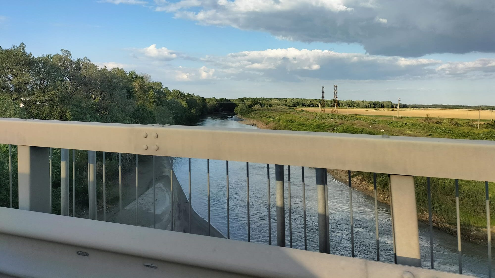

Dimineața
Drumul spre Subcarpați
Aplicația începe dis-de-dimineață, cu traversarea Dobrogei de Sud, a Bălții Ialomiței și a Câmpiei Bărăganului, într-un peisaj dominat de culturi agricole și observații asupra infrastructurii rutiere.


Aplicație practică de o zi · Jurnal geografic

Etapele zilei
Aplicația începe dis-de-dimineață, cu traversarea Dobrogei de Sud, a Bălții Ialomiței și a Câmpiei Bărăganului, într-un peisaj dominat de culturi agricole și observații asupra infrastructurii rutiere.
La Pâclele Mari, studenții observă direct formele create prin ieșirea la suprafață a gazelor și noroiului, conurile vulcanice, craterele active, curgerile de noroi și peisajul de tip badlands.


Ultima parte a aplicației urmărește peisajele de la Meledic, unde sarea, apa, alunecările și procesele de dizolvare conturează un spațiu spectaculos pentru observații geomorfologice.


Galerie


Ce rămâne după o zi de teren
Observarea directă a vulcanilor noroioși, badlands-urilor, reliefului salifer și proceselor actuale.
Corelarea Dobrogei, Bărăganului și Subcarpaților într-un traseu coerent de lectură teritorială.
Înțelegerea rolului Geoparcului UNESCO în valorizarea patrimoniului natural și cultural.